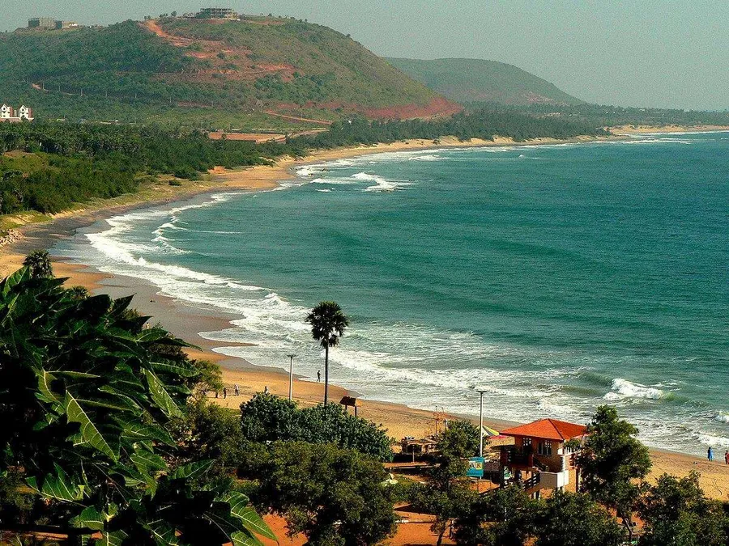

Cox’s Bazar is a District under Chittagong Division, which is famous for its longest unbroken sandy sea beach.
It is
located 150 km south of the industrial port- Chittagong. Cox’s Bazar is considered as having the longest sea
beach in
the world, with a total of 121 kilometer long. The name Cox’s Bazar was derived from its founder, Captain Cox.
He
founded the very attractive beach in 1798. Then the Cox’s Bazar beach started only as a small port and health
resort.
Though the beach is considered to be the longest beach in the world, it has been the least crowded among the
other
beaches. Here, visitors can enjoy the relaxing breeze of the Bay of Bengal Sea and the peacefulness of the
place. The
Cox’s bazar beach certainly has the finest leisure it can offer to each of its visitors. People can take a
timely stroll
along the lengthened stretch of the beach and enjoy the view of the amazing seascape. Visitors can also enjoy
water
sport activities like scuba diving, surfing, and try some boat rides.
There are also other wonderful places to see around the Cox’s beach bazar. One of these is the beautiful
Himchari
waterfall, located 18 kilometer south of Cox’s Bazar sea beach. This is the most visited place in the district,
with its
beautiful refreshing green hills and the wonderful water fall, where visitors can bathe and swim apart from the
sea
itself.
Another attraction is the Moheshkhali Island near the Cox’s beach bazar coast. The island can be reached via
speedboat.
Here, visitors can view the breath-taking view of the island. With the bright green color of its mangrove forest
that
will surely amaze everyone who come to see the place. This is definitely the next best thing to explore after
one’s
beach trip.
Cox’s Beach Bazar really is the place best recommended for people who seeks for serene, soberness and relaxing
vacation.
Every Cox’s Beach Bazar trip will surely please and satisfy everyone who visits here.
Back to home page